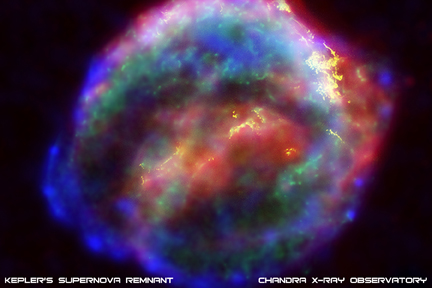
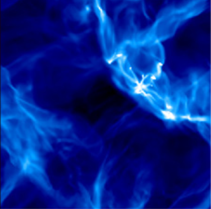

Shocks are a common phenomenon in the ISM. They can be generated by a number of things:
In short, the ISM is a very dynamic fluid, full of shocks, magnetic fields, and driven supersonic turbulence. In addition, radiative processes play an important role in modifying shock structure (we have not included these effects in our module). Shocked gas is able to cool radiatively if it has propagated long enough time-scales, making energy loss important.
Excellent in-depth tours that show where shocks may be relevant to the ISM and where they are observed are found at the following ISM module links: [MacGregor, Landmarks of the ISM], [Alexander, The Multiphase ISM]. Below are a couple of highlights from observations and simulations.
False color image of a supernova remnant SN 1604 (Kepler's SN; ref). Such objects drive shocks in the ISM: 
For more information on the evolution of SN, the link here is a blog post from our Astronomy 201b ISM blog, highlighting the importance of magnetic fields and shocks.
Energy injection (feedback) from stars leads to a very turbulent ISM filled with shocks. Below is a 3D simulation of the turbulent structure by Stella Offner and collaborators (ref): 
I also created a subsonic turbulent simulation using the moving mesh fluid solver code AREPO. Below is a movie of the time evolution of the velocity magnitude.
Despite its complicated appearance, such turbulent fluids have certain characteristic properties. Such supersonic, shock-filled fluids as observed in the ISM (Burgers Turbulence) show a powerlaw distribution of kinetic energy at different length scales as well as approximately log-normal density fields.